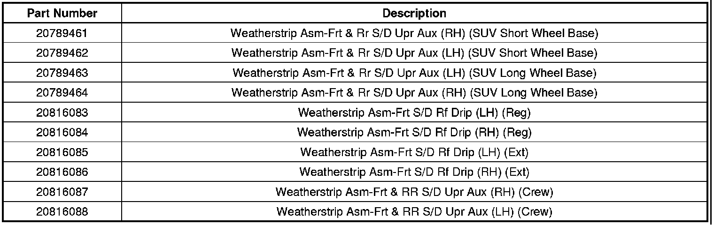

Body - Squeak/Itching Noise in Upper Door Area
TECHNICALBulletin No.: 06-08-64-035G
Date: June 01, 2010
Subject: Squeak/Itching Noise in Upper Door Area (Replace Weatherstrip Assembly)
Models:
2007-2010 Cadillac Escalade, Escalade ESV, Escalade EXT
2007-2010 Chevrolet Avalanche, Silverado, Suburban, Tahoe
2007-2010 GMC Sierra, Yukon, Yukon XL, Yukon Denali, Yukon Denali XL
Supercede:
This bulletin is being revised to update parts description information. Please discard Corporate Bulletin Number 06-08-64-035F (Section 08 - Body and Accessories).
Condition
Some customers may comment on a squeaking or itching noise in the upper door area when driving.
Cause
This condition may be caused by the roof drip weatherstrip to door frame contact. This could occur at any or all of the doors.
Correction
Replace the weatherstrip assembly. Refer to Door Opening Weatherstrip Replacement in SI.
Parts Information

Warranty Information
For vehicles repaired under warranty, use the appropriate labor operation from the Labor Time Guide.

Disclaimer